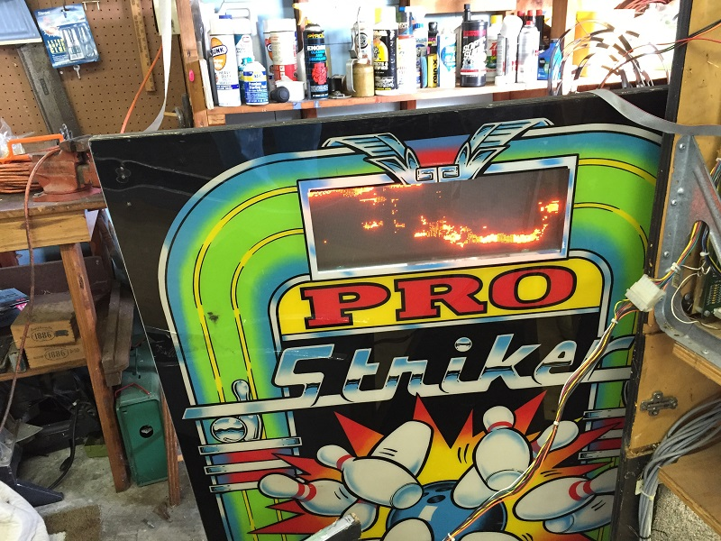
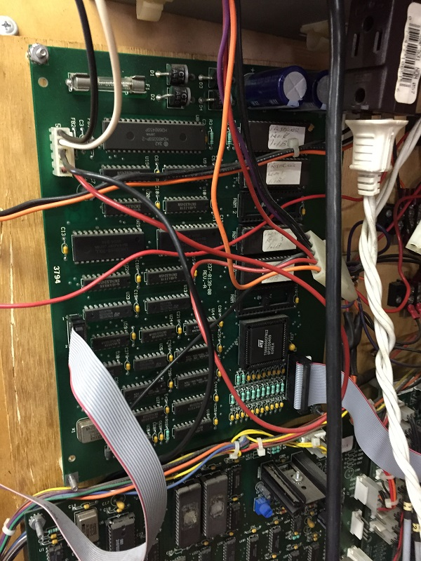
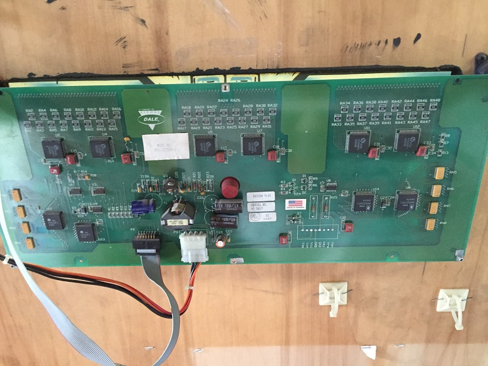

Pro Strike Bowling
This site is dedicated to the documentation and supplemental information to restore a Pro Strike Bowling by Design Plus Industries.. I acquired the game via craigslist in unknown condition.


Air Pump Manual
Manual Troubleshooting
Setup Manual
Display ROM v11b